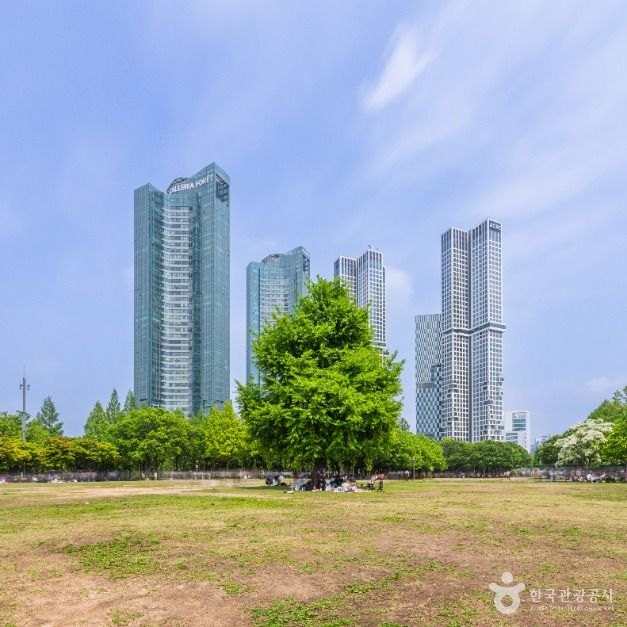
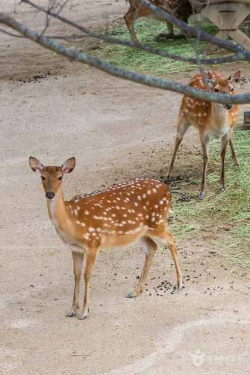
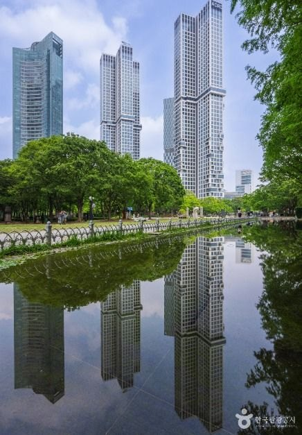

Seoul Forest Guide: Why Go
This Seoul Forest guide covers one of the city's biggest green spaces, Seoul Forest Park (서울숲) at 273 Ttukseom-ro, Seongdong-gu. It opened on June 18, 2005, where the Hangang River meets Jungnangcheon Stream, and it covers about 480,994㎡. The park was built with donations and volunteer help from about 5,000 citizens, and Seoul sees it as its answer to Hyde Park and Central Park.
It's open 24 hours, all year, and it's one of the easiest places in Seoul for a long, flat walk with your dog. It's just a few minutes from the subway.
Walking With Your Dog: The Rules
Here are the pet rules from the Korea Tourism Organization's pet-travel data. Rules can change, so check signs on site.
| Rule | Seoul Forest |
|---|---|
| Breeds allowed | All dog breeds |
| Where | Only in some areas of the park, so follow the signs |
| Indoor facilities | No pets allowed |
| Leash | Required (keep it within 2m) |
| Lawns & gardens | The conservancy asks owners to keep pets off lawns and garden beds |
| Poop bags | Bring your own and clean up |
| Dangerous breeds | Muzzle required |
Local tip: Weekend afternoons can get busy. If your dog is nervous in crowds, start with a short walk in the morning.
What to See: Deer, Lawns and Ponds
The park has four themed zones: the Culture & Art Park, the Eco Forest, the Nature Experience Learning Zone and the Wetland Eco Park. You'll also find a family lawn, an outdoor stage, a deer enclosure, an insect and botanical garden, playgrounds and walking trails. The park has more than 400,000 trees of about 95 species, including pines and katsura trees.



Visitor Information
| Item | Seoul Forest Park |
|---|---|
| Address | 273 Ttukseom-ro, Seongdong-gu, Seoul |
| Hours | Open 24 hours, all year · Eco Forest (deer enclosure) 05:30–21:30 · Insect Botanical Garden 10:00–17:00 (Mar–Oct) or 10:00–16:00 (Nov–Feb), closed Mondays |
| Admission | Free park entry |
| Subway | Suin-Bundang Line, Seoul Forest Station, Exit 4 (about 2 minutes' walk) · Line 2, Ttukseom Station, Exit 8 (about 10 minutes) |
| Parking | 211 spaces, 24 hours · small cars ₩200 per 5 minutes · the lot is small, so public transport is recommended |
| Phone | +82-2-460-2905 |
| Facilities | 8 restrooms open 24 hours, nursing rooms, AEDs, and free wheelchair and stroller rental for up to 2 hours at the visitor center (09:00–18:00, ID required) |
| Stay Nearby | Seongsu-dong and Ttukseom are a short walk away. See the booking buttons below. |
Sources: Seoul Metropolitan Government Parks (parks.seoul.go.kr), Seoul Forest Park Conservancy (seoulforest.or.kr) and Korea Tourism Organization pet-travel data (한국관광공사). Photos © Korea Tourism Organization. Details may change, so check before you visit.
Pros & Cons
✅ Pros
- Free, open 24 hours, and right next to the subway.
- All dog breeds are welcome in the pet-friendly areas.
- Lots of variety: lawns, ponds, forest paths and a deer enclosure.
- 24-hour restrooms and stroller and wheelchair rental.
⚠️ Cons
- Dogs can only use some areas and can't go indoors.
- The 211-space lot fills up fast on weekends.
- Some sections and facilities close on Mondays.
Who It Suits
- Great for: Dog owners, families with strollers, and anyone who wants a flat, easy walk in Seoul.
- Great for: Pairing with a café hop in nearby Seongsu-dong.
- Less ideal: If you want a hiking trail with real hills, try one of Seoul's mountains instead.
Book Your Seoul Trip
Seoul Forest FAQ
Can I bring my dog to Seoul Forest?
Yes. The Korea Tourism Organization's pet-travel data says all dog breeds are welcome, but only in some areas of the park. Dogs aren't allowed in indoor facilities. Keep your dog on a leash, carry poop bags, and put a muzzle on dogs classed as dangerous breeds.
What are Seoul Forest's opening hours?
The park is open 24 hours, all year. Some sections and facilities have their own hours and may close on Mondays, so check the official site.
How do I get to Seoul Forest by subway?
Take the Suin-Bundang Line to Seoul Forest Station. It's about a 2-minute walk from Exit 4. You can also walk about 10 minutes from Ttukseom Station (Line 2), Exit 8.
Is there parking at Seoul Forest?
Yes. The lot has 211 spaces and runs 24 hours. Small cars pay ₩200 per 5 minutes. The lot is small and fills up, so public transport is recommended.
Is Seoul Forest free?
There's no admission fee for the park itself. Parking is paid, and some programs or facilities may have their own rules.
Portable Dog Water Bottle
Keep your dog hydrated on long park walks. Bring poop bags too, because they're required at Seoul Forest.